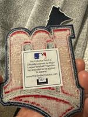
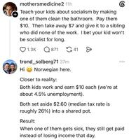
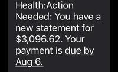

0
0

0

0
0

Scientists at the Indian Institute of Technology, Madras (IIT-M) have created what they describe as the world's most detailed 3D cellular atlas of the human brainstem, linking whole-brain MRI views to individual neurons across more than 500 tissue sections. The free online atlas, called Anchor, could help researchers better understand diseases such as Alzheimer's, Parkinson's, stroke, and SIDS by showing how healthy and diseased brain tissue differs cell by cell. The BBC reports: Built from high-resolution microscope images rather than costlier molecular techniques, it creates a detailed three-dimensional map of the brainstem, identifying more than 200 clusters of brain cells and nerve pathways. Eight chemical markers help distinguish different cell types, producing one of the clearest pictures yet of this vital, but poorly, understood part of the brain. The brainstem occupies only a sliver of the brain, yet it keeps people alive. It links the brain to the spinal cord and controls breathing, heartbeat, sleep, wakefulness and movement.
[...] Users can zoom from the whole brainstem seen on MRI down to individual neurons while maintaining their precise spatial relationships. The researchers have made the atlas freely available online, hoping it becomes a reference tool for neuroscientists, neurologists and neurosurgeons worldwide. Its applications could also extend well beyond anatomy. By comparing healthy brainstem maps with diseased tissue, scientists may better understand disorders ranging from Parkinson's disease and stroke to Alzheimer's disease and sudden infant death syndrome (SIDS). More precise maps could also help neurosurgeons navigate one of the brain's most delicate regions with greater confidence.
Read more of this story at Slashdot.
German textile firm ZEGO has filed for insolvency and is blaming a March cyberattack that shut down production for nearly six weeks. "ZEGO's filing adds another name to the short but growing list of companies that say a digital break-in was commercially fatal to their business," reports The Register. From the report: In a notice to customers and suppliers, the organization said it had exhausted every available option before seeking insolvency protection. Managing director Johannes Zenglein described the filing as "one of the most difficult steps in our company's 37-year history." "The cyberattack of March 29, 2026, however, impacted our company to an extent that we could not fully compensate for despite our best efforts," Zenglein wrote. "The consequences resulted in a production outage of nearly six weeks and significant financial strain. These effects ultimately impacted our financial situation so severely that filing for insolvency became necessary."
ZEGO did not disclose what kind of attack it suffered, whether ransomware was involved, who was behind it, or whether customer or employee data was compromised. What it has made clear is that the operational disruption alone was enough to push the business beyond the point of recovery. ZEGO said insolvency proceedings have now been initiated, but insisted the filing does not necessarily spell the end of the business. It said it plans to keep production running while administrators attempt to restructure the business, preserve jobs, and keep customers and suppliers on board.
Read more of this story at Slashdot.
According to the Wall Street Journal (paywalled), Apple agreed to use Intel's U.S. chipmaking plants after White House officials pressured Tim Cook during tariff-relief talks last summer. MacRumors reports: In August 2025, Apple CEO Tim Cook was in Washington to lobby the Trump administration to drop its proposed 100 percent tariff on semiconductor imports -- a levy that would have raised costs across Apple's product line. Apple reportedly secured an exemption after pledging to invest hundreds of billions of dollars in the U.S., although many of those investments were already planned. During the meetings, president Trump and commerce secretary Howard Lutnick are said to have urged Cook to use Intel's fabrication plants to make some of Apple's chips. The link between the tariff talks and the Apple-Intel deal had not been previously reported.
Almost a year later, Trump announced via his Truth Social platform that Apple would begin using Intel-made chips in some products. "We need to design and build our Chips right here in America," the president posted. The news sent Intel shares to record highs. According to a person familiar with the negotiations cited by the WSJ, Apple plans to have Intel make chips for both Mac laptops and iPhones. The report doesn't say which chips or in what volume, and Apple is expected to remain reliant on Taiwan Semiconductor Manufacturing Company, or TSMC, for the majority of its custom silicon.
Read more of this story at Slashdot.
A new Incogni survey suggests Americans are pulling back from social media, with more than half saying "maintaining an online presence feels like work" and 55% reporting they post less than they did five years ago. "The full study concludes that there's been a significant shift in public attitudes toward social media," reports PCMag. "Where it was once fun and relaxing, it's now growing dark and angsty..." From the report: As the chart shows, there's also a clear correlation with age. A full 60% of Gen Z respondents feel the pain of maintaining a social presence. Perhaps they have a niggling hope that they might still be discovered as an influencer? Those of us in the Boomer category are clearly more relaxed about it, with just 38% saying that maintaining a social presence feels like work. The survey quizzed respondents about how they feel when they don't keep up with checking their socials and, by extension, how they'd feel if they just plain quit. They were given choices, both positive (peace, relaxation, and relief) and negative (anxiety, fear of missing out, and discomfort).
Overall, positive reactions held slightly greater sway, with an average of about 21% compared with 19% for negative reactions. The Gen Y contingent accentuated that split, with 25% positive and 21% negative, while Gen X went even further, with 20% positive and just 13% negative. But the Gen Z group flipped the results, identifying 27% negative and 26% positive reactions to going without social media.
There's another force pushing folks away from the socials: increasing politicization. Of the survey's respondents, 44% agreed that political content is driving people away from social media, and only 20% disagreed. Among Gen Z respondents, the impetus was stronger: 48% agreed, and just 13% disagreed. These negative feelings associated with politics only serve to highlight the positive reactions to deleting your social media.
Are you posting less on social media than you did five years ago, and are you being more selective about who can see what you post? Then you're with the majority. More than half of the respondents answered yes to each of those questions. But would you ever parlay fewer posts into no posts (aka quit posting entirely)? When asked what it would take to finally get them to terminate a social media account, a die-hard group of one in six respondents said there's nothing that could make them quit. But more than half could picture quitting due to security concerns, and almost half accepted the possibility that harassment or hate speech could send them packing. Others cited the amount of time wasted on scrolling through social media and the mental health threats of doomscrolling.
Read more of this story at Slashdot.
"Git and email are the two really only tools I use," Linus Torvalds said at Open Source Summit India 2026. But ZDNet reports that he also shared his thoughts on Rust, C, and patch-checking tools:
"I use Google as a way to look things up." He added, "I'm unusual; most of the other maintainers end up using many more tools, and I think a lot of them are starting to use AI tools for patch checking," while he "works at a higher level. I work with people, not tools."
When asked about Rust both in Git and the kernel, he pushed back against hype: "I'm not sure Rust is going to take over the world. I still think Rust is very interesting, [but] I still find C to be a much simpler tool." Torvalds continued, "I'm much more excited about all the tools we have for verification of C," including "automated patch verification tools" and "automated email checking tools for patches like Sashiko." Summing up, Torvalds told the Mumbai audience: "I'm more of a hack-and-slash kind of person, and I still like the raw and simple power of C, and I don't think that's going to change."
Torvalds also warned against overestimating Rust's benefits: "Rust fixes a few easy bugs that you can make in C, but it does not fix the logic errors, right? It does not think for you, and when you write incorrect code, the language does not matter. The end result will be incorrect." On mixed C/Rust code bases, he pointed out that guarantees are limited: "The guarantees that Rust give you only apply in the Rust-only parts of your code base, and wherever you interact with C code, all bets are off," with most Rust code in Linux talking to "core kernel C code" that is "much better quality... because that code has been tested in every single environment."
At the same time, Torvalds pointed out, "some of our big and more high-profile bugs in the kernel lately have been logic errors" rather than the kind of memory errors Rust prevents.
"It was just bad programming, which sadly happens even in carefully maintained subsystems and important kernels that are supposed to be very secure."
Read more of this story at Slashdot.
An anonymous reader quotes a report from the BBC: StubHub and its CEO, Eric Baker, have been hit with a proposed $5-million class-action lawsuit in the United States over the company's ties to large-scale scalpers -- connections reported by CBC News last week. The suit, filed Monday by New York ticket buyer Louis Sanquini, alleges deceptive practices and fraudulent misrepresentation over StubHub's promoting itself as a "marketplace for fans to buy and sell tickets." The online ticket resale giant has faced a storm of customer complaints after cancelling thousands of World Cup tickets. The company has repeatedly said it is simply a technology platform that does not buy, sell or possess tickets. However, CBC reported last week that Baker disclosed in recent filings with the U.S. Securities and Exchange Commission that he runs Andro Capital, a hedge fund that engages in large-scale resale of millions of dollars' worth of sports and concert tickets on the StubHub resale platform.
Sanquini filed the proposed class action in the Southern District of New York, arguing consumers were kept in the dark and that he believed StubHub was a "neutral" marketplace. Lead counsel Kevin Steinberg told CBC News in an emailed statement that "consumers deserve honesty and transparency." A CBC investigation found that the CEO of online ticket reseller StubHub owns and manages a hedge fund that scalps millions of dollars of its own tickets. "While what StubHub is alleged to have engaged in and perpetrated upon millions of patrons is unfathomable, this case is about transparency and consumer trust. If companies make representations to the public, consumers are entitled to expect that those representations are complete and accurate," he said.
The claim reads: "Defendants' failure to disclose this conflict of interest, while affirmatively marketing StubHub as a fan-to-fan marketplace, deceived Plaintiff and the Class and caused them to pay prices, and accept terms, they would not have accepted had the truth been known." Sanquini argues that had he known StubHub's CEO held a financial interest and that the company was helping finance professional resellers, he would never have used the resale site to buy tickets to see rock band Kiss in 2023 or to attend a New York Red Bulls-New York City FC Major League Soccer match in 2024.
Read more of this story at Slashdot.
Astronomers have detected erythrulose, a sugar found in raspberries and self-tanners, in a gas cloud near the center of the Milky Way. While not essential for life itself, the molecule can convert into a form thought to be important for life's origins, adding evidence that key prebiotic ingredients may be widespread across the galaxy. The Associated Press reports: Using two dish-shaped radio telescopes in Spain, researchers collected data from a large gas cloud near the center of the Milky Way. They identified the sugar in gas form by comparing telescope signals to samples in the lab. It's the latest kind of sugar detected in space -- in a region crossed by NASA's twin Voyager, the farthest spacecraft to ever travel from Earth.
Scientists have found interesting chemistry in our galaxy, including building blocks for genetic material and parts of the cell. They spotted a cousin to table sugar near the center of the Milky Way about 25 years ago, and black grains from asteroid Bennu retrieved by NASA's Osiris-Rex spacecraft yielded other sugars, including a key DNA ingredient. The latest sugar isn't essential for life, but can easily convert to a form that's thought to be crucial to kick-starting life on Earth. And it's one of the most complex sugars spotted so far, said astrophysicist Erika Hamden with the University of Arizona. The results were published in the journal Nature Astronomy.
Read more of this story at Slashdot.
An anonymous reader quotes a report from the Associated Press: Hundreds of economists say in an open letter that institutions "must act now" to address how artificial intelligence could transform the economy and could put many people out of work. The statement released Monday was signed by top economists, along with computer scientists and some executives at tech companies including Anthropic, Google and OpenAI.
"AI may become radically more powerful over the next 10 years," says the letter organized by Stanford University's digital economy lab. "This could drive an unprecedented transformation of our economy, larger than the Industrial Revolution, but unfolding over a vastly shorter time frame. It could bring risks, including large-scale job displacement, as well as opportunities such as major gains in living standards."
The letter, which has only four sentences, says leaders must "build the incentives, guardrails, and institutions needed to steer AI in a direction that complements humans and benefits society." The Stanford lab says the letter has so far been signed by more than 200 economists and AI researchers, including 16 winners of a Nobel Prize. "We must be intentional and make collective, democratic choices, rather than letting market forces play out and risking leaving most citizens behind," wrote computer scientist and AI pioneer Yoshua Bengio, who was also among the signatories. He said it "it is highly plausible that AI will drastically transform our economies."
Other signatories include Google CEO Eric Schmidt, LinkedIn cofounder Reid Hoffman, and Nobel laureates Joseph Stiglitz, Daron Acemonglu, and Simon Johnson.
Read more of this story at Slashdot.
Microsoft is overhauling Windows 11 search to prioritize local apps, files, and settings over web results while removing ads, promotions, MSN/Bing clutter, and other distractions. "You've have been asking for search that is faster, more relevant, and easier to use -- whether you're opening an app, finding a file, or changing a setting," Microsoft says in a new blog post. "Because the Windows Search Box is where many people start, we focused first on making results more dependable, easier to scan, and clearer before you click." Windows Central reports: The company is highlighting several key improvements, including clearer results that does a better job at showing why a search result is appearing when a query has been typed, alongside prioritizing local results before reaching out to the web.
Search is also getting better at handling things like typos, which should help surface the right results even when the user misspells an app or file. The search home pane will no longer show MSN or Bing content, and promotional content and ads will no longer appear in search results.
These upgrades are now rolling out to Windows Insiders in the Experimental Channel, and are expected to roll out to all Windows 11 users later this year. Insiders may not see the changes right away as they are rolling out in waves. The full list of changes can be found here.
Read more of this story at Slashdot.
CISA and allied governments are warning users to secure their routers as Russian state-backed hackers continue compromising the devices and turning them into proxy nodes to disguise attacks against critical infrastructure. The advisory urges users to disable outdated SNMP versions, use strong passwords, update firmware, and turn off unnecessary router services to reduce the risk of being swept into these botnets. Ars Technica reports: "Russian Federal Security Service (FSB) Center 16 cyber actors continue to exploit poorly configured and vulnerable networking devices worldwide, opportunistically compromising multiple critical infrastructure sector networks," the Cybersecurity and Infrastructure Security Agency said Monday. The hacking groups are tracked under various names, including Berserk Bear, Energetic Bear, Crouching Yeti, Dragonfly, Ghost Blizzard, and Static Tundra. The advisory was co-issued by governments from around the world, including Australia, Denmark, New Zealand, and the UK.
The primary means of compromise the agency warned about was hackers scanning IP ranges with active Simple Network Management Protocol (SNMP) agents that accept common or default authentication credentials. These scans are run by the very sorts of router botnets the actors are trying to enroll the targeted device in. By sending malicious traffic from spoofed addresses, the hackers can use the SNMP agent on poorly configured routers to run malware. SNMP allows users to collect and organize information about managed networking devices or to modify that information to change device behavior.
With control of a device, the hackers then use it as an exit node when probing or attacking targets in the communications, defense, energy, financial services, and government sectors. By funneling the malicious traffic through a benign-appearing device on a trustworthy IP address, the attackers are able to lower the chances of getting blocked by firewalls and other security defenses. Monday's advisory made no mention of identical operations carried out in recent years by China. So-called residential proxies are also a go-to tool used by financially motivated criminal hackers to obscure their true IP address. In many cases, these sorts of proxies are made up of millions of streaming devices that are sold with preloaded malware.
Read more of this story at Slashdot.
BrianFagioli writes: Cloudflare has launched Precursor, a new behavioral bot detection system that monitors mouse movement, typing cadence, scrolling, clipboard activity, page visibility, and other signals across an entire browsing session. The system is designed to catch advanced bots that can run JavaScript, use real browsers, and pass traditional CAPTCHA challenges. Cloudflare says Precursor does not record actual keystrokes and instead studies timing and rhythm. The company also says the data is not tied to user identities or persistent profiles. Even so, software that watches how people move and type throughout a visit raises privacy concerns, especially as Cloudflare claims bots now generate roughly 57 percent of all Internet requests.
Read more of this story at Slashdot.
The European Union is considering major new restrictions on children's access to social media, including age limits, phased access, and an outright ban. "This is not about whether children can access social media," said European Commission President Ursula von der Leyen. "It is about when social media can access our children." The Verge reports: Social media platforms could also be forced to prove their services are not harmful before young people are allowed to use them. European Commission President Ursula von der Leyen said the bloc's executive arm could propose new legislation within months, after reviewing recommendations from a panel of experts released today.
The panel recommended using a phased approach, including "no screens at all" for children under 3, supervised internet use for those under 13, and some limits for older teens. It also said social media platforms should have to prove their services are safe to younger users, an approach von der Leyen said she supports. Von der Leyen said the Commission will consider the report and return with proposals "after the summer." Any legislation would still need approval from the European Parliament and the EU's 27 member countries before becoming law across the bloc.
Read more of this story at Slashdot.
An anonymous reader quotes a report from The New York Times: A state-owned newspaper in China recently published a satellite image of a data center in Gainesville, Va., writing in English that the development of artificial intelligence posed a threat to Americans' physical and financial well-being. A comic strip made to look as if it had been published by a Maryland news outlet -- created with OpenAI's ChatGPT by people in China, the tech company said -- circulated on X this year, blaming data centers for soaring electricity bills. It showed a tycoon smoking a cigar and clutching bags of cash. A video shared on X by a known covert Russian influence operation questioned the viability of a data center that an American company, Firebird, is constructing in Armenia, the small Caucasus nation that has been a focus of Kremlin pressure. "The country's electrical grid instability may render it useless," the video's narrator says.
All are examples of a push by foreign adversaries to seize on what polls have shown is deep ambivalence -- verging at times on hostility -- about the spread of the data centers needed to power A.I. in the United States and elsewhere. China, Russia and, to a lesser extent, Iran have sought to use state media outlets to turn the controversy over data centers in the United States into "a domestic fracture point," according to a new analysis by Alethea, a threat intelligence company, which identified scores of articles and posts on social media this year. These campaigns, whose impact on public opinion remains to be seen, have raised alarms in Washington, where A.I. is seen as a top issue heading into this year's midterm elections.
Read more of this story at Slashdot.
"Japan's experimental reusable rocket took off and safely landed in a first test flight Saturday," reports the Associated Press, as Japan "seeks to achieve the technology key to cut launch costs and compete in the global space market dominated by SpaceX."
The RV-X rocket lifted off, hovered and moved horizontally before landing [watch the video here] during its less than one-minute flight at the Japan Aerospace Exploration Agency's Noshiro Testing Center in northeastern Japan, which was livestreamed by the NVS, a group of space fans...
Saturday's flight is a step forward for Japan in achieving the technology needed to develop a lower cost successor to the country's current mainstay, single-use H3 series.
Japan's test comes the same week that China recovered an orbital booster rocket for the first time.
Read more of this story at Slashdot.
A coalition of 12 states led by California is suing to block the $111 billion Paramount Skydance-Warner Bros. merger, arguing it would reduce competition in theatrical distribution, blockbuster films, and basic cable licensing. The challenge (PDF) defies the DOJ's approval of the deal. Variety reports: The coalition, led by California Attorney General Rob Bonta, alleges that the $111 billion transaction violates the Clayton Act by lessening competition in three distinct markets: wide-release theatrical distribution, "top-grossing" theatrical distribution, and basic cable licensing. "The unlawful merger of these two entertainment behemoths would lead to higher prices, lower quality, and less content for film and television, harming movie theaters, basic cable distributors, and ultimately, audiences on every sofa and movie theater seat in the U.S.," Bonta said in a statement on Monday.
The suit argues that the combined company will control 27% of the wide-release theatrical distribution market, 30% of the submarket comprising "anticipated blockbuster films," and 27% of the basic cable bundle. The states argue that such consolidation will harm theaters and cable and satellite providers that rely on competition among distributors. Paramount and Warner Bros. are two of the five remaining legacy studios. Together, all five -- including Disney, Sony and Universal -- control 86% of theatrical distribution and 90% of blockbuster distribution, the states said. Warner Bros. and Paramount are also the second- and third-largest basic cable distributors, respectively.
[...] The states are expected to seek an injunction to block the transaction, which Paramount expects to close sometime after July 22. The 12 states in the coalition are Arizona, California, Colorado, Connecticut, Massachusetts, Minnesota, Nevada, New Jersey, New Mexico, New York, Oregon, and Washington. [...] All are represented by Democratic attorneys general. "Consolidation here not only leads to higher prices -- it also leads to fewer opportunities for important stories to come to life, and fewer ways for audiences to encounter stories, ideas, and perspectives beyond their own experiences," Bonta said. "In this country, no one is above the law. With this lawsuit, California and our sister states are fighting for free and fair markets, not rigged markets. America has no kings in government or our economy."
Read more of this story at Slashdot.
Wall Street Journal : Chinese startup DFSX launches an AI chip that it claims uses a fully domestic supply chain and is built on a 14nm process, but says it can rival 4nm chips — DFSX's investors include state-backed entities and industrial funds such as a venture-capital vehicle co-founded by Alibaba's Jack Ma
Daniel Kuhn / The Block : Velocity, a stablecoin treasury and settlement platform, raised a $38M Series A led by Dragonfly and FirstMark, bringing its total funding to around $50M — Quick Take — Dragonfly and FirstMark co-led Velocity's round with participation from Activant Capital, Capital One Ventures …
Mike Isaac / New York Times : OpenAI strikes a partnership with Kalshi to show FIFA World Cup prediction market data in ChatGPT search results, its first deal with a prediction market — The partnership, a first of its kind for the artificial intelligence company, will use the prediction market's data to power some search results about the soccer tournament.
Steve Dent / Engadget : Spotify launches a Talk to Spotify feature that lets users create playlists and more, rolling out in beta to Premium users 18+ in the US, Ireland, and Sweden — The new beta feature works from the Home or Now Playing views on mobile. — Spotify already uses a lot of AI (too much some might say) …
Connor Jones / The Register : Researcher: SpaceXAI's Grok Build CLI uploaded user repos to a Google Cloud Storage bucket; uploads have now stopped and Musk says prior uploads will be deleted — Researcher confirms the uploads have stopped, but says xAI's privacy command was not what fixed them
David Morris / Bloomberg : Filing: Chinese chipmaker CXMT is seeking to raise ~$9.8B in an IPO on Shanghai's chip-heavy STAR Board, pricing 6.69B shares at ~$1.28 each — Chinese memory giant CXMT Corp. unveiled the terms of its initial public offering. — The company formally known as ChangXin Memory Technologies Inc. priced …
Aditya Soni / Reuters : AI startup Reflection says it has signed a $1B+ deal to secure computing capacity from Nebius, including access to Nvidia chips, following a deal with SpaceX — AI startup Reflection said on Tuesday it has signed a more than $1 billion deal to secure computing capacity from Nebius (NBIS.O), including access to Nvidia's latest chips.
Katherine Doherty / Bloomberg : Kalshi launches a forward curve tool for AI compute, using event contracts to track the future rental costs of GPUs, storage, and memory — Kalshi Inc. has created a tool that plots the future price of computing power, joining the ranks of exchange and index operators attempting …
Todd Bishop / GeekWire : Seattle-based Brinc Drones, which makes 911 response drones, raised $125M led by Motorola Solutions, bringing its total funding to more than $280M — Brinc Drones, the Seattle-based maker of 911 response drones, has raised $125 million in a new funding round led by Motorola Solutions …
Aditya Soni / Reuters : Flex, which offers AI-based payment tools, credit, and more to mid-sized companies, raised a $70M Series B1 led by Halo Fund, a source says at a $1.2B valuation — Flex, an AI startup pitching itself as a one-stop shop for the banking needs of mid-sized business owners …
Reuters : Analysis: xAI has installed far more gas turbines without US permits at Colossus 2 than it has publicly acknowledged, impacting Black neighborhoods the hardest — Elon Musk's xAI has installed far more gas turbines without federal permits at its Colossus 2 data center project in Tennessee …
Alison Sider / Wall Street Journal : Discount airline Frontier partners with SpaceX to offer Wi-Fi for the first time from early 2027, as it targets customers willing to pay more for premium travel — Budget airline rolling out more amenities to target customers willing to pay for premium travel
Mike Wheatley / SiliconANGLE : Custom AI chip design startup TYLsemi raised $43M in early-stage funding led by Matter Venture Partners to build modular chips thanks to packaging tech advances — Artificial intelligence chiplet startup TYLsemi Inc. revealed itself to the world today, announcing it has raised $43 million …
Financial Times : Sources and telecom data: a coordinated campaign of SS7 pings was used to track the locations of US personnel during the US-led strikes on Iran in late February — Roaming systems and ad tech were used to try to locate American personnel as Tehran attacked forces in the region
Michael J. de la Merced / New York Times : AI drug design startup Chai Discovery raised $400M led by Index at a $3.8B valuation, as it pitches its models as AI infrastructure for pharmaceutical companies — The fund-raising values the company at $3.8 billion and underscores investor interest in using artificial intelligence to tackle problems like drug discovery.